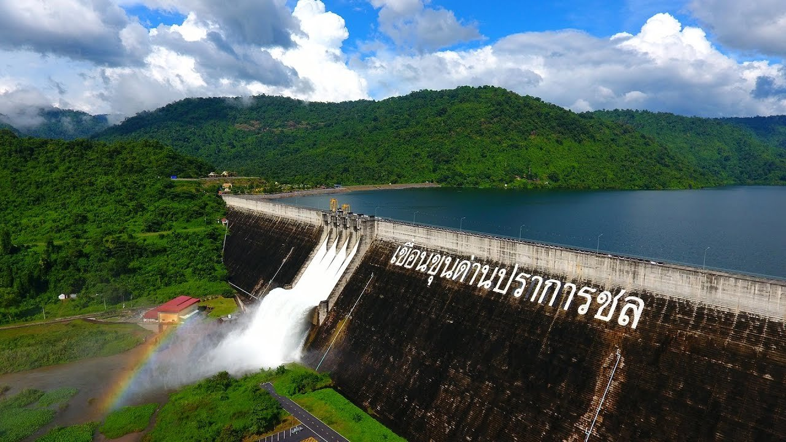
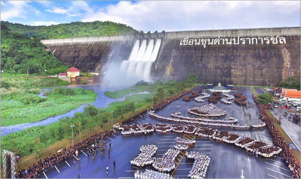
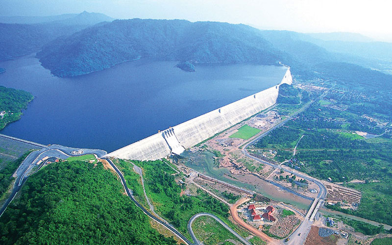
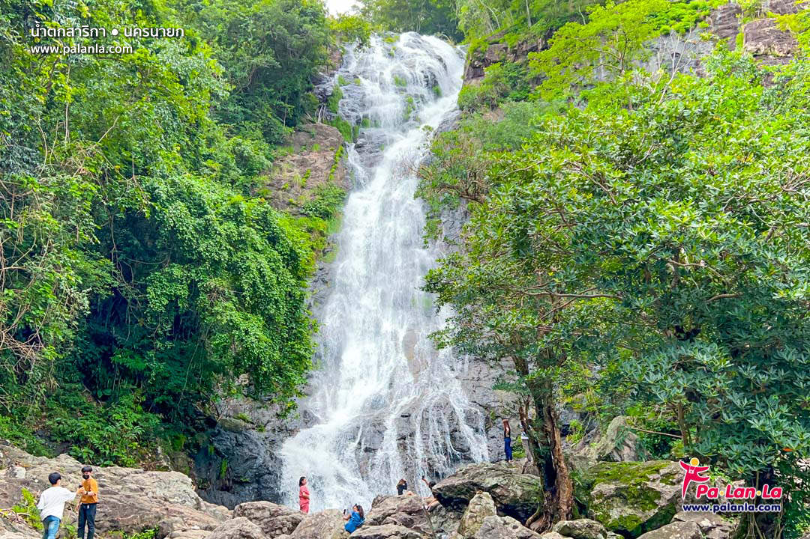
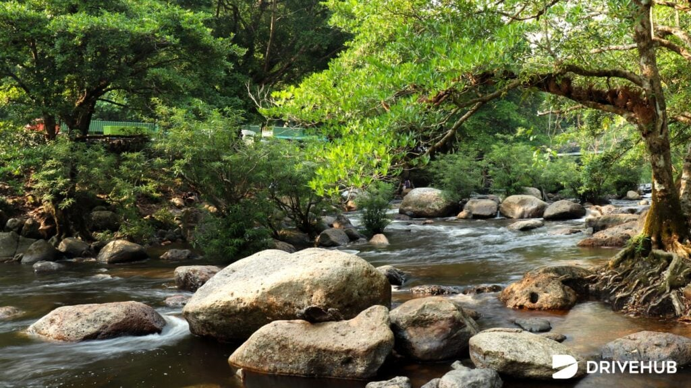
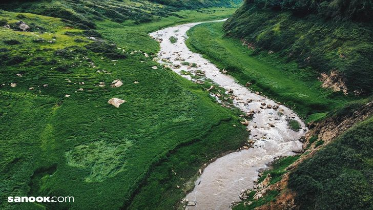
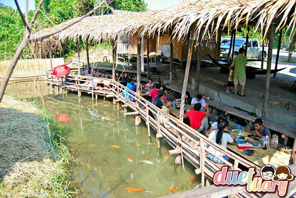
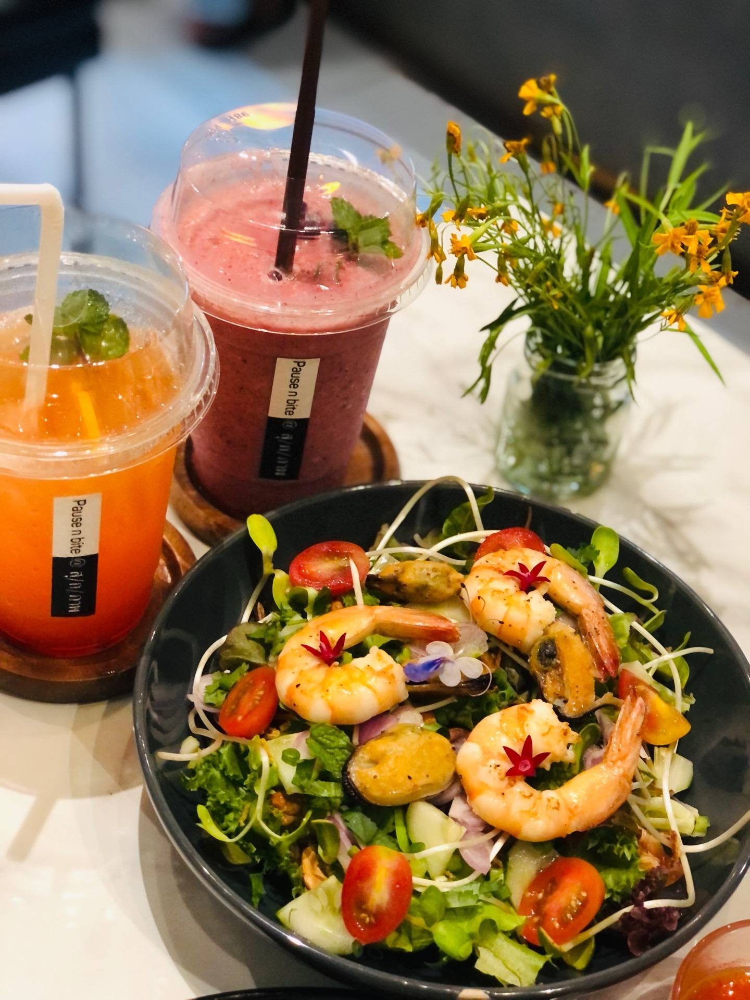
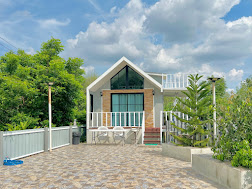

ข้อมูลเบื้องต้นของจังหวัดนครนายก
นครนายก เป็นจังหวัดหนึ่งในภาคกลาง (บางตำราจัดอยู่ในภาคตะวันออกหรือภาคกลางตอนบน) ห่างจากกรุงเทพมหานครเพียงประมาณ 105 กิโลเมตร เป็นเมืองที่มีความสำคัญทางประวัติศาสตร์และธรรมชาติอันอุดมสมบูรณ์ มีชื่อเสียงโดดเด่นในเรื่องของน้ำตกใสสะอาด เขื่อนคอนกรีตขนาดใหญ่ กิจกรรมล่องแก่งอันตื่นเต้น และบรรยากาศที่โอบล้อมด้วยขุนเขาเขียวชอุ่มตลอดทั้งปี เหมาะแก่การพักผ่อนหย่อนใจในวันหยุดสั้นๆ
3 สถานที่ท่องเที่ยวห้ามพลาด
เจาะลึกสถานที่ไฮไลต์อันงดงามของจังหวัดนครนายก พร้อมภาพบรรยากาศ
1. เขื่อนขุนด่านปราการชล
เขื่อนขุนด่านปราการชล เป็นเขื่อนคอนกรีตบดอัดที่ยาวที่สุดในโลก ตั้งอยู่ที่บ้านท่าด่าน ตำบลหินตั้ง อำเภอเมือง จังหวัดนครนายก สร้างขึ้นตามแนวพระราชดำริของพระบาทสมเด็จพระบรมชนกาธิเบศร มหาภูมิพลอดุลยเดชมหาราช บรมนาถบพิตร เพื่อช่วยแก้ปัญหาเรื่องน้ำท่วมและภัยแล้งในพื้นที่ พร้อมทั้งเป็นแหล่งท่องเที่ยวเชิงนิเวศที่สำคัญ นักท่องเที่ยวสามารถชมทัศนียภาพอันกว้างใหญ่ไพศาลของอ่างเก็บน้ำเหนือเขื่อน รับลมเย็นสบาย หรือเลือกนั่งเรือหางยาวเพื่อชมธรรมชาติและน้ำตกที่ซ่อนตัวอยู่ลึกเข้าไปในผืนป่า
📷 เขื่อนขุนด่านปราการชล



2. น้ำตกสาลิกา
น้ำตกสาลิกา ตั้งอยู่ในเขตอุทยานแห่งชาติเขาใหญ่ เป็นน้ำตกขนาดใหญ่ที่มีชื่อเสียงและเป็นที่นิยมของนักท่องเที่ยว สายน้ำไหลลดหลั่นลงมาจากหน้าผาสูงชันถึง 9 ชั้น โดยชั้นที่สูงที่สุดมีความสูงประมาณ 200 เมตร บริเวณรอบข้างรายล้อมด้วยป่าไม้ร่มครึ้มอุดมสมบูรณ์ มีแอ่งน้ำใสเย็นฉ่ำธรรมชาติ เหมาะสำหรับการลงเล่นน้ำ พักผ่อนหย่อนใจ หรือนั่งรับประทานอาหารท่ามกลางเสียงสายน้ำไหลรินในวันหยุด
📷 น้ำตกสาลิกา

ภาพที่ 1
ภาพที่ 33. น้ำตกเขาช่องลม
น้ำตกเขาช่องลม ถือเป็นดินแดนธรรมชาติอันลึกลับที่ได้รับฉายาว่า "กรีนทูซึม (Green Tourism)" ตั้งอยู่บริเวณด้านหลังเขื่อนขุนด่านปราการชล การเดินทางเข้าชมจะต้องนั่งเรือชมทัศนียภาพของอ่างเก็บน้ำแล้วต่อด้วยการเดินเท้าลัดเลาะตามเส้นทางธรรมชาติ นักท่องเที่ยวจะได้พบกับหุบเขาสงบสีเขียวขจี โขดหินน้อยใหญ่ และสายน้ำตกที่ไหลเย็นฉ่ำ เป็นจุดเช็คอินถ่ายภาพยอดฮิตที่เต็มไปด้วยความมหัศจรรย์ของธรรมชาติ
📷 น้ำตกเขาช่องลม

3 ร้านอาหารและของกินขึ้นชื่อ
1. ครัวลุงกั้ง
เมนูแนะนำ: ต้มยำปลาคัง
แวะชิมอาหารรสชาติจัดจ้านริมทาง ไม่ว่าจะเป็นต้มยำปลาคัง ปลาเนื้อ่อนทอด ปลาคังผัดฉ่า
📍 เปิดพิกัด GPS ร้านอาหาร
2. ลุงเผ่า ก๋วยเตี๋ยวเรือกะลา
เมนูแนะนำ: ก๋วยเตี๋ยวเนื้อน้ำตก, ก๋วยเตี๋ยวหมูน้ำตก
ร้านก๋วยเตี๋ยวเรือ มีชื่อเสียงและโด่งดังร้านเด็ดนครนายก บรรยากาศของร้านทำได้น่ารัก ออกแนวลูกทุ่งไม้ ๆ เมนูเด็ด “ก๋วยเตี๊ยวกะลา” เครื่องแน่นสมราคา น้ำซุปแซ่บแบบปรุงจัดจ้าน
📍 เปิดพิกัด GPS ร้านอาหาร
3. คาเฟ่ สุ/ก/ภาพ ร้านมันเขี้ยว
เมนูแนะนำ: ยำสลัดซีฟู้ด, สปาเกตตี้เบค่อนพริกแห้ง
คาเฟ่แห่งใหม่ สุ /ก/ ภาพ ตั้งอยู่ใจกลางเมืองนครนายก ร้านนี้ใช้พืชผักและผลไม้จากฟาร์มตนเองที่มีอยู่แล้วบนพื้นที่ 10 ไร่ เป็นการปลูกแบบอินทรีย์ปลอดสารพิษ
📍 เปิดพิกัด GPS ร้านอาหาร3 ที่พักธรรมชาติสุดฟิน

1. บ้านสวนแคมป์ปิ้ง นครนายก
สไตล์: รีสอร์ทสไตล์แคมป์ปิ้ง
ที่พักโอบล้อมด้วยธรรมชาติ สัมผัสอากาศบริสุทธิ์ สิ่งอำนวยความสะดวกครบครัน เหมาะสำหรับการพักผ่อน
📍 เปิดพิกัด GPS ที่พัก2. At Rice Resort
สไตล์: รีสอร์ทสไตล์เรียบหรู
เป็นที่พักสไตล์ชิคและร่มรื่น ตั้งอยู่ในอำเภอเมืองนครนายก รายล้อมด้วยธรรมชาติ เหมาะสำหรับการพักผ่อน เดินทางจากกรุงเทพฯ ใช้เวลาเพียงประมาณ 1 ชั่วโมง
📍 เปิดพิกัด GPS ที่พัก3. Little Farm Nakornnayok
สไตล์: รีสอร์ตและฟาร์มสเตย์
เป็นรีสอร์ตและฟาร์มสเตย์ ตั้งอยู่ที่อำเภอปากพลี จังหวัดนครนายก เหมาะสำหรับการพักผ่อนแบบเป็นส่วนตัวท่ามกลางธรรมชาติ
📍 เปิดพิกัด GPS ที่พัก